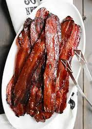

Brown Sugar Bacon

Bacon Leveled Up!
A common place breakfast item paired with brown sugar, creating a sweet and savory delight for those in need of a pick me up before the day.
Ingredients
- Three-fourths cup light brown sugar
- Two teaspoons smoked paprika
- Freshly ground black pepper
- One pound thick-cut bacon
Steps
- Peheat the oven to 400 degrees F. Position racks in the top and bottom of the oven. Line 2 rimmed baking sheets with foil and set cooling racks into the baking sheets.
- Using your fingers, crumble together the brown sugar, smoked paprika and several grinds of black pepper on a plate. Dredge the bacon on both sides in the brown sugar mixture, rubbing so the sugar adheres. Arrange the slices on the racks without touching.
- Bake until the bacon is crisp and caramelized, flipping the slices and rotating the baking sheets from top to bottom halfway through, about 20 minutes total. Let the slices cool on the racks, turning once or twice so they don't stick.